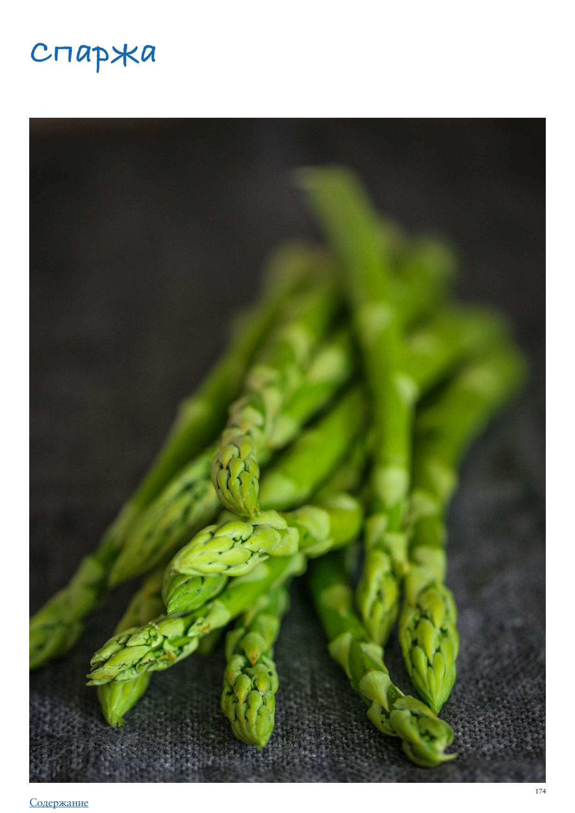

<!DOCTYPE html>
<html lang="en">
<head>
<meta charset="UTF-8">
<meta name="viewport" content="width=device-width, initial-scale=1.0">
<title>Спаржа</title>
<style>
  * { box-sizing: border-box; margin: 0; padding: 0; }
  body { font-family: -apple-system, BlinkMacSystemFont, 'Segoe UI', Roboto, sans-serif;
         background: #faf7f4; color: #2d2926; max-width: 680px; margin: 0 auto; padding-bottom: 40px; }

  .photo-wrap img { width: 100%; max-height: 380px; object-fit: cover; object-position: center center; display: block; }

  .header { padding: 24px 24px 16px; }
  h1 { font-size: 26px; font-weight: 700; line-height: 1.2; margin-bottom: 10px; color: #1a1714; }
  .meta { font-size: 13px; color: #9a8a80; margin-bottom: 6px; }
  .rating { display: inline-block; background: #fff3e6; color: #c05f2a;
             font-size: 13px; font-weight: 600; padding: 3px 10px; border-radius: 20px; margin-bottom: 8px; }
  .source { font-size: 12px; color: #b0a09a; margin-top: 4px; }

  .info-bar { font-size: 13px; color: #5a4a3a; margin: 6px 0 4px; }

  .section { padding: 0 24px; margin-bottom: 24px; }
  .section-title { font-size: 15px; font-weight: 700; color: #7a4f2a;
                    text-transform: uppercase; letter-spacing: 0.6px;
                    margin-bottom: 12px; display: flex; align-items: center; gap: 8px; }
  .section-icon { font-size: 17px; }

  .subsection-title { font-size: 15px; font-weight: 700; color: #3a2a1a;
                       margin: 24px 0 10px; padding-bottom: 5px;
                       border-bottom: 2px solid #e8d5b8; }
  .ingr-subheader { font-size: 13px; font-weight: 700; text-transform: uppercase;
                     letter-spacing: 0.5px; color: #8a6a3a; margin: 14px 0 4px; }
  .ingr-list { list-style: none; display: flex; flex-direction: column; gap: 8px; }
  .ingr-list li { font-size: 15px; line-height: 1.5; padding: 8px 12px;
                   background: white; border-radius: 8px;
                   border-left: 3px solid #f0c080; }
  .qty { font-weight: 600; color: #c05f2a; }

  .steps { list-style: none; counter-reset: steps; display: flex; flex-direction: column; gap: 12px; }
  .steps li { font-size: 15px; line-height: 1.6; padding: 12px 14px 12px 48px;
               background: white; border-radius: 10px; position: relative; }
  .steps li::before { counter-increment: steps; content: counter(steps);
                       position: absolute; left: 12px; top: 12px;
                       width: 26px; height: 26px; background: #f0c080;
                       border-radius: 50%; display: flex; align-items: center;
                       justify-content: center; font-weight: 700; font-size: 13px; color: #7a4f2a; }

  .notes-list { list-style: disc; padding-left: 20px; margin: 0; }
  .notes-list li { font-size: 15px; line-height: 1.6; color: #2d2926; }

  .my-notes-section { margin-top: 8px; }
  .my-notes-box { background: #fffef5; border: 1.5px dashed #c8b870; border-radius: 12px;
                  padding: 14px 18px; font-size: 14px; line-height: 1.7; color: #5a4a30; }
  .my-notes-box p { margin-bottom: 6px; }
  .my-notes-box p:last-child { margin-bottom: 0; }
  .empty-note { color: #c0b090; font-style: italic; }

  .recipe-table { width: 100%; border-collapse: collapse; margin: 4px 0 12px; font-size: 14px; }
  .recipe-table th { background: #f5ede4; color: #7a4a28; padding: 8px 12px;
                      text-align: left; border: 1px solid #e0cfc0; font-weight: 700; }
  .recipe-table td { padding: 8px 12px; border: 1px solid #e8ddd5; vertical-align: top;
                      line-height: 1.5; }
  .recipe-table tr:nth-child(even) td { background: #fdf8f5; }

  p.para { font-size: 15px; line-height: 1.65; color: #2d2926; margin-bottom: 12px; }
  p.para:last-child { margin-bottom: 0; }

  .inline-photo { margin: 16px 0; border-radius: 10px; overflow: hidden; }
  .inline-photo img { width: 100%; max-height: 320px; object-fit: cover; object-position: center center; display: block; }
  .inline-photo.portrait { display: flex; flex-direction: column; align-items: center; background: transparent; }
  .inline-photo.portrait img { width: auto; max-width: 55%; max-height: none; object-fit: contain; border-radius: 10px; }
  .inline-photo.portrait figcaption { width: 55%; text-align: center; }
  .inline-photo figcaption { font-size: 12px; color: #9a8a80; padding: 6px 10px;
                               background: #f5f0eb; font-style: italic; }
  .inline-video { margin: 16px 0; border-radius: 10px; overflow: hidden; background: #000; }
  .inline-video video { width: 100%; max-height: 400px; display: block; }
  .inline-video figcaption { font-size: 12px; color: #9a8a80; padding: 6px 10px;
                               background: #f5f0eb; font-style: italic; }

  .related-section { font-size: 13px; margin-top: 8px; color: #9a8a80; }
  .related-label { font-weight: 600; color: #7a4f2a; }
  .related-link { color: #c05f2a; text-decoration: none; font-weight: 500; }
  .related-link:hover { text-decoration: underline; }

  .cooked-bar { font-size: 13px; margin-top: 10px; display: flex; flex-wrap: wrap; align-items: center; gap: 6px; }
  .cooked-label { font-weight: 600; color: #7a4f2a; }
  .cooked-chip { background: #f0ede6; color: #5a4a3a; padding: 3px 10px;
                  border-radius: 20px; font-size: 13px; border: 1px solid #d8cfc4; }

  .my-photo-wrap { margin: 24px 24px 0; border-radius: 12px; overflow: hidden;
                    border: 2px solid #e8d9c8; }
  .my-photo-label { background: #f5ede4; color: #7a4f2a; font-size: 12px; font-weight: 600;
                     padding: 6px 14px; letter-spacing: 0.4px; }
  .my-photo-wrap img { width: 100%; max-height: 420px; object-fit: cover;
                        object-position: center; display: block; }

  .back-btn { display: inline-flex; align-items: center; gap: 6px;
               margin: 28px 24px 20px;
               background: #c05f2a; color: white;
               font-size: 14px; font-weight: 600;
               padding: 8px 16px; border-radius: 20px;
               text-decoration: none; }
  .back-btn:hover { background: #a04e22; text-decoration: none; }

  @media (max-width: 480px) {
    h1 { font-size: 22px; }
    .steps li { padding-left: 42px; }
  }
</style>
</head>
<body>
  <a class="back-btn" href="../cookbook.html">← Catalog</a>
  <div class="photo-wrap"></div>
  <div class="header">
    
    <h1>Спаржа</h1>
    <div class="meta">ПРАктика. Овощи</div>
    
    
    
    <div class="source">Source: ПРАктика. Овощи</div>
  </div>
  
  
        <div class="section">
          
          <p class="para">Спаржа</p><p class="para">Весенний овощ, настоящий деликатес, который многие не любят или не понимают по одной простой причине: они пробовали неправильно приготовленную спаржу! Почти любые овощи страдают от слишком долгой готовки, но мало что сравнится со спаржей в этом плане: переваренная она неприятная по текстуре, зато если готовить ее совсем недолго, чтобы она осталась хрустящей и лишь чуточку смягчилась, это нечто потрясающее. (Исключение — суп из спаржи, но для супа текстура и должна быть другой.) Давайте разберемся, что такое спаржа и какой она бывает. Несмотря на то, что в последнее время ее несложно найти в супермаркетах, некоторые проходят мимо зеленых или желтовато￾белых ростков, считая, что спаржа — это трубчатая субстанция, которую маринуют по￾корейски. Спешим развеять миф: то, что называется «спаржа по-корейски» представляет собой особым образом приготовленный соевый продукт, а точнее, пенку соевого молока, которую высушивают, затем вымачивают и маринуют нейтральную по вкусу сою с помощью корейских специй. С настоящей спаржей она не имеет ничего общего. А вот еще один факт, который может вас удивить. Вы наверняка знаете растение с очень тонкими, ажурными зелеными веточками и красивыми ягодками оранжево-красного цвета, которое часто растет на дачах и используется для украшения букетов. Вот это и есть настоящая спаржа, только взрослое растение (его еще называют аспарагус или «елочка»). Съедобный деликатес — побеги этого многолетнего растения. Спаржа бывает белой, зеленой и фиолетовой. Самая распространенная — зеленая. Ее вкус слегка сладковатый, с тонкой ореховой нотой. Белая, или бесхлорофилльная спаржа начала выращиваться в 19 веке (интересно, что главным центром выгонки такой спаржи когда-то была Москва). Чтобы побеги оставались белыми, их полностью изолируют от солнца. Вкус у белой спаржи очень тонкий и нежный, более маслянистый и сладковатый, чем у зеленой. Фиолетовая спаржа, цвет которой придают антоцианы, отвечающие за темный цвет кожицы винограда, встречается в продаже редко и отличается выраженной горчинкой во вкусе; при готовке она становится зеленой. Спаржа может быть тонкой, тоньше, чем стручковая фасоль, или толстой, до пары сантиметров в диаметре у основания. Это не разные сорта, а ростки молодых или взрослых растений. Чем старше растение, тем более толстые ростки оно дает. Сезон спаржи в Европе начинается рано, в апреле, поэтому она считается одним из самых ранних весенних овощей. Во Франции, Германии, Нидерландах, Англии и других странах этого момента истинные фуди ждут с нетерпением! Как выбирать Независимо от цвета, свежая спаржа должна быть плотной, упругой, с крепкими, компактными, не рыхлыми кончиками и не морщинистой поверхностью стебля (такой она становится по мере высыхания). Лучше, если спаржа продается увлажненной, а не с высохшим местом среза. Белая спаржа временами попадается с горчинкой. К сожалению, по внешнему виду это определить невозможно, видимо, дело в условиях выращивания. Но не расстраивайтесь, горчинка не сильная, даже пикантная (также см. ниже рекомендации по варке белой спаржи). Как хранить Рекомендуется хранить спаржу, поставив ее, как букет цветов, в стакан или банку с водой и накрыв пластиковым пакетом, в холодильнике. Если даже вы купили спаржу с подсохшими кончиками, можно ее оживить при таком способе хранения, достаточно немного срезать нижнюю часть у ростков.</p><p class="para">Как чистить и нарезать Стебли белой спаржи перед готовкой обязательно нужно очистить, примерно от места, где стебель становится гладким, и до низа, так как кожица у нее всегда волокнистая. Исключение из правила — очень тонкая белая спаржа, но в продаже такая встречается крайне редко. Удобнее всего это делать овощечисткой. Зеленую спаржу (кроме самой толстой, с плотной кожицей) можно не чистить, хотя я часто вижу, что в ресторанах это делают. Нижние концы ростков спаржи жесткие, их следует удалить. Существуют разные техники, например, кто-то ломает их — считается что росток сломается именно на границе жесткой и мягкой частей. Я делаю иначе: отрезаю ножом от одного ростка по кусочку до тех пор, пока нож не перестает чувствовать сопротивление, а потом отрезаю столько же у остальных ростков из пучка. Чем более тонкая и молодая спаржа, тем меньше жесткий кончик; у крупных побегов он может доходить до 6–7 см. Если спаржа готовится не целиком, например, запекается с другими овощами или варится для супа, лучше отрезать верхние части ростков — те, что с маленькими отростками на стебле, — и добавить их буквально в последнюю минуту, потому что они очень нежные и вкусны в почти сыром или сыром виде. Да и сама спаржа чудо как хороша в сыром виде. Попробуйте нарезать толстые стебли зеленой спаржи тончайшими ленточками с помощью овощечистки и добавить в салат. Нежные тонкие ростки вообще можно есть просто так, сырыми и целиком, с любым вкусным дипом, или добавлять к традиционному набору крудите — брусочкам морковки и стеблям сельдерея. Лайфхак</p><ul class="notes-list"><li>Если вы нередко готовите суп из спаржи или другие супы-пюре, можете, следуя технологии zero waste, не выбрасывать жесткие кончики ростков и снятую кожицу, а заморозить. Когда соберетесь варить суп, сначала отварите остатки в воде или бульоне, затем процедите, остатки выбросьте. У супа, даже если он самый простой, например, картофельный, появится благородный оттенок вкуса спаржи. Как готовить Варка (бланширование) Во Франции, где спаржу особенно ценят, для ее варки используют специальную высокую и узкую кастрюлю, в которой стебли располагаются в воде, а кончики ростков — над водой, чтобы они не варились, а лишь слегка пропаривались. Если у вас есть возможность, варите спаржу так, чтобы верхушки ростков оставались над водой, но я с этим не заморачиваюсь и варю спаржу в широком сотейнике горизонтально. Воду для варки спаржи следует хорошо посолить: количество соли должно составлять 2–3% от веса воды, то есть 20 г соли (2–3 ч. л.) на 1 литр, чтобы вкус воды был как у морской. При варке белой спаржи также рекомендуется добавить ложку сахара, чтобы смягчить присущую ей натуральную горчинку. Полностью избавиться от горчинки не удастся, но слегка нейтрализовать этот прием поможет. Выложить спаржу в слабо кипящую воду и варить, в зависимости от толщины и цвета, от 1 до 10–12 минут. Зеленая спаржа варится быстро, от 1 до 4 минут, белая — существенно дольше, до 12 минут, но точное время зависит от толщины ростков. Ориентируйтесь на текстуру: готовая спаржа должна стать мягче, но сохранить легкий хруст, не размягчиться полностью. У зеленой спаржи индикатором служит еще и цвет — готовая спаржа не должна приобрести желтоватый оттенок или цвет хаки, нужно, чтобы она осталась зеленой.</li></ul><ol class="steps"><li>По окончании варки следует немедленно достать спаржу из горячей воды и сразу обдать холодной водой или переложить на лед, чтобы остановить процесс готовки. Подавать, по желанию полив растопленным сливочным маслом, с дольками лимона. Жарка на сковороде Если вам встретилась в продаже очень тонкая зеленая спаржа, ее лучше не варить, а жарить. Нагреть 1 ст. л. оливкового масла в большой сковородке на средне-сильном огне. Выложить ростки зеленой спаржи в один слой, влить 1 ст. л. воды и готовить 1–4 минуты, в зависимости от толщины ростков. Не солить! Спаржа должна остаться слегка хрустящей и зеленой, не поменять цвет. Снять крышку, поперчить и слегка обжарить в течение 2–3 минут. В самом конце посыпать достаточно крупной солью, в идеале хлопьями. По желанию при подаче сбрызнуть лимонным соком. Белую спаржу классически всегда варят, поэтому я очень удивилась, когда однажды продавщица на рынке рассказала мне, что ее можно жарить, и получается вкусно. Я попробовала и могу подтвердить, да, это очень вкусно, и лучше всего ее жарить на топленом масле. Рецепты со спаржей Салат с сырой спаржей и грецкими орехами на 4 порции 5 ст. л. оливкового масла 100 г свежих белых хлебных крошек 100–120 г грецких орехов 500–600 г зеленой спаржи 100 г пармезана или пекорино цедра и сок 1/2 лимона горсть листочков мяты щепотка хлопьев перца чили соль, свежемолотый черный перец</li><li>Разогреть в сковородке 2 ст. л. оливкового масла, всыпать хлебные крошки, слегка посолить и обжаривать на среднем огне, помешивая, до золотистого цвета, около 5 минут. Пересыпать крошки в миску, слегка поперчить и перемешать.</li><li>Обжарить орехи на сухой сковородке на среднем огне до появления аромата, 2–3 минуты. Мелко порубить или слегка измельчить в кухонном комбайне.</li><li>Обработать спаржу, отрезать кончики. С помощью овощечистки нарезать стебли длинными тонкими ленточками. Сыр натереть. Натереть цедру и выжать из половинки лимона сок. Мяту порубить.</li><li>В большой миске смешать хлебные крошки, орехи, тертый сыр, цедру, хлопья чили и мяту. Добавить спаржу (вместе с кончиками), посолить и поперчить, перемешать.</li><li>Выложить салат на большую тарелку для подачи, полить лимонным соком и оставшимся оливковым маслом.</li><li>Суп из спаржи на 5–6 порций 2 больших пучка зеленой спаржи (700–800 г) 50–70 г сливочного масла 2 стебля лука-порея (около 400 г) 800 мл куриного бульона 150 г зеленого горошка (можно замороженного) 2 ст. л. тертого пармезана 80 мл жирных сливок 1 ч. л. лимонного сока соль, свежемолотый черный перец</li><li>Обработать спаржу, отрезать нежные кончики и переложить в миску. Нарезать оставшиеся ростки на кусочки длиной около 1,5 см</li><li>В кастрюле с тяжелым дном, лучше чугунной, разогреть на средне-сильном огне половину сливочного масла. Выложить верхушки ростков и обжаривать 1–1,5 минуты. Переложить в миску.</li><li>Растопить в кастрюле оставшееся масло, выложить оставшуюся спаржу и нарезанный ломтиками лук-порей, посолить, поперчить, убавить огонь до средне-слабого и готовить, время от времени помешивая, до размягчения овощей, около 10 минут.</li><li>Влить бульон, довести до кипения, всыпать горошек и варить около 5 минут. Добавить пармезан, снять с огня.</li><li>Измельчить суп в блендере, перелить обратно в кастрюлю, добавить сливки и лимонный сок. При желании прогреть. Проверить, хватает ли соли и перца.</li><li>Подавать, украсив каждую порцию отложенными кончиками спаржи. Сочетание спаржи с другими продуктами Спаржа отлично сочетается с яйцами, твердым и козьим сыром, сливочным маслом, белой и жирной рыбой, морепродуктами, беконом, картофелем, зеленым горошком, грибами, трюфелем, лимоном и другими цитрусами, арахисом, миндалем, мятой, анисом, перцем чили. Что еще можно приготовить со спаржей</li></ol><ul class="notes-list"><li>Салат из спаржи со стручковым горошком и заправкой винегрет</li><li>Салат из спаржи с апельсином, фетой и фундуком</li><li>Холодная отваренная белая спаржа с домашним майонезом</li><li>Суп-пюре из спаржи с зеленым горошком и шпинатом</li><li>Отваренная теплая спаржа с голландским соусом</li><li>Классика немецкой кухни: белая спаржа с отварным картофелем, голландским соусом и жареным или запеченным лососем или венским шницелем</li><li>Спаржа на гриле</li><li>Запеченная спаржа с гремолатой (петрушка, лимон, чеснок)</li><li>Спаржа с зеленой фасолью, запеченная в соусе бешамель</li><li>Жареная спаржа, завернутая в бекон, с глазурью из кленового сиропа</li><li>Паста со спаржей и лимонно-сливочным соусом</li></ul>
        </div>
</body>
</html>